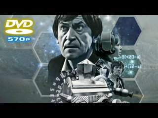
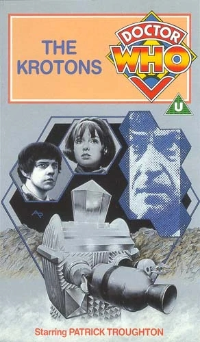
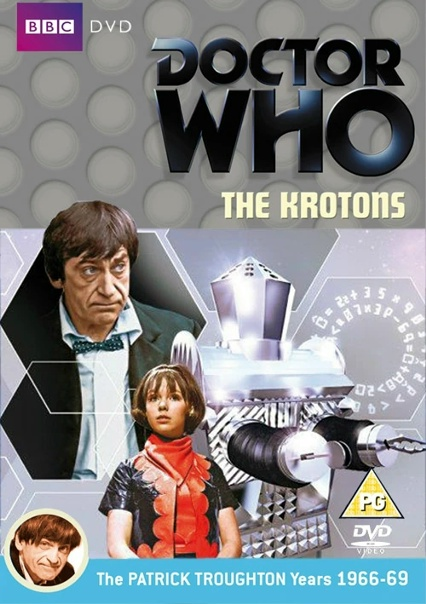
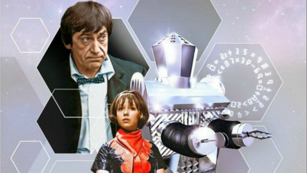
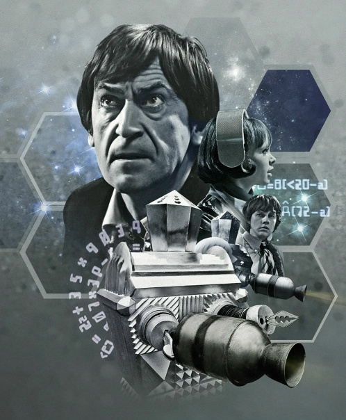
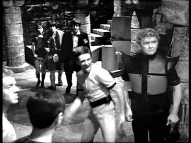

Субтитры: Русские и Английские |  |
|---|
| 1-3 эпизоды сохранились - 16mm t/r * 1-й эпизод так же сохранился на - 35mm t/r * 4-й эпизод найден в 1978 г. - 16mm t/r |
|---|
| |
| Ссылки для скачивания: |
|---|
«Кротоны» — на планете Экселон угнетённый народ Кротс вынужден служить загадочным хозяевам‑Кротонам, которые черпают силу из интеллекта своих слуг. Второй Доктор, Джейми и Зои раскрывают жестокую природу этого «союза» и бросают вызов системе, где знание становится оружием и одновременно проклятием. Тон серии — мрачно‑социальный, будто сама планета хранит боль поколений; здесь особенно ярко звучит тема сопротивления и цены свободы. Важный момент: серия показывает, как власть держится на подавлении разума, и ставит героев перед выбором — сломать систему любой ценой или попытаться спасти тех, кто в неё врос.
 VHS - февраль 1991 |  DVD - 2 июля 2012 * Версия в нашей группе |
|---|


